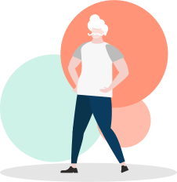

O Processo de produção em uma roupa acontece em várias
etapas a partir da
fibra que você escolheu :)
Vamos conhecer?

Produção do Algodão
Após a colheita, é feito a separação da fibra e semente, em seguida é iniciado a etapa spinning onde são feitos os fios a partir da fibra para transformá-lo em tecido. Os tecidos passam por alvejantes para ficarem mais claros e se necessário, o tecido é tingido com corantes.


Confecção
As peças são costuradas, estampadas e embaladas para
chegar
até o consumidor :)
Nota: grandes lojas de departamento,
utilizam mão de obra escrava :(

Qual caminho você quer seguir?



Beleza!
Venha me usar!
De novo?!
Sim? Não?